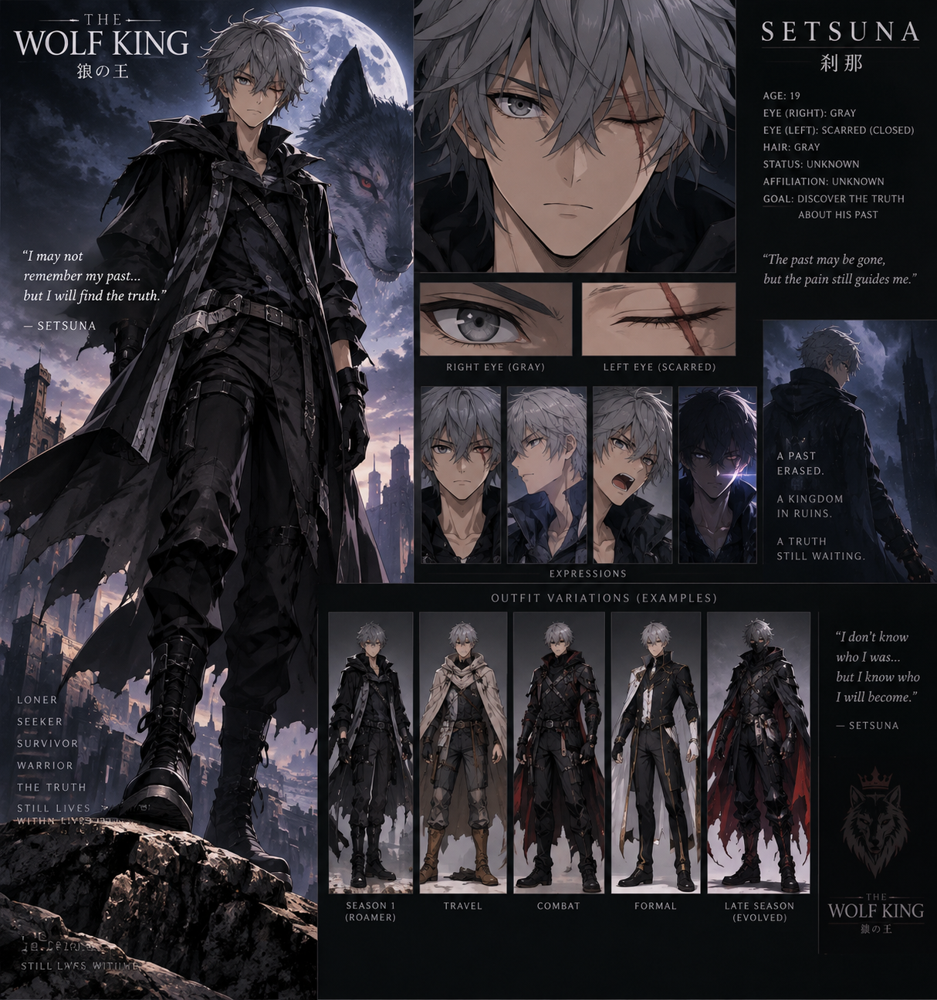

PANEL 01The Royal Capital
SEASON ONE
The Forgotten Pain
Chapter 1 — 50 full-color story panels with more dialogue, supporting characters, mystery, and a stronger cliffhanger.
A NEX MANGA ORIGINAL
Season 1 — The Forgotten Pain
A dark psychological fantasy about a young man whose body remembers a past his mind has forgotten.
Enter the Story
SEASON ONE
Chapter 1 — 50 full-color story panels with more dialogue, supporting characters, mystery, and a stronger cliffhanger.
CHARACTERS
Strategic, observant, independent, and haunted by memories he cannot access.
A calm stranger carrying a secret connected to Setsuna.
A royal knight who recognizes Setsuna's power.
A royal strategist who sees Setsuna as a threat.
A noblewoman who knows the name Ashen Kingdom.
A supernatural presence watching from the shadows.
WORLD
The world expands through recurring characters, ancient kingdoms, factions, and hidden bloodlines.